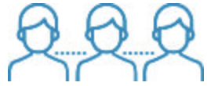

バンコクのノマドエンジニア育成講座
お問い合わせ / 資料請求はこちら
資料請求
プログラミングで
人生の安定を手に入れよう

バンコクのノマドエンジニア育成講座
iSara[イサラ]
まずは２０日間で、
月１０万円稼げるスキルを手にいれよう。
※受講料金は実質0円です。詳しくは資料請求をどうぞ。
お問い合わせ&資料請求は
こちら
第４期生：2018年12月3日 ~ 2018年12月22日
＊締め切りました
第５期生：2019年4月8日 ~ 2019年4月27日
＊締め切りました
第６期生：資料請求受付中です
ツイート いいね！ シェアエンジニアとして
本当の自由を手に入れるためには？
エンジニア需要の高まりに伴い、
プログラミングスクールが増えています。
しかしそこでの学習の先は、
提携して決められた就職先に就職すること。
これで本当にいいのですか？
日本人エンジニアはアメリカと比べて
給料が格段に低い。
その理由がここにあり、
エンジニアは自分の給料を
コントロールすべきなのです。
スキルを身につけたエンジニアは、
人生をコントロールすることでより自由に。
そこで必要なのが「稼ぐ力」です。
ノマドエンジニア育成講座
iSara[イサラ]とは
「 稼ぐこと 」にフォーカスした
エンジニア育成講座です。
稼げるエンジニアに必要な
5つのスキルとは？
基礎的な
プログラミングスキル案件獲得に必要な
営業力見積もり作成から
納品までの知識自分の付加価値を
高めるスキル- 
フリーランス同士の
横のつながり
iSaraで
「基本的なプログラミングスキル」は教えません
基本的なプログラミングスキルは無料で学べる時代。
iSaraでは、基礎的知識は
事前課題とチャットサポートのみ。
-
STEP.1
【バンコク渡航前１ヶ月】
事前課題で基礎知識を学ぶ
-
STEP.2
【バンコク到着後】
実践的に稼ぐことに特化した学習
-
STEP.3
【バンコク帰国後】
講座実施後の案件獲得サポート
スキルアップしてもフリーランスエンジニア
として食べていくことは難しい。
フリーランスにはプログラミングスキル以外が大切。
iSara[イサラ]で学べること
iSaraの学習では、エンジニアとして
「稼ぐ」ために必要な能力を身につけます。


これらを教えるのがiSaraです。
他のプログラミングスクールと
ここが違う！
iSara[イサラ]の３つのメリット
-
現役フリーランスから学べる
他のプログラミングスクールとは違い、実際にフリーランスとして活動しているエンジニアが直接講師を努めます。
-
実践を通じて学べる
フリーランスにとって最短の学習方法は「実践」。iSaraでは実案件を通して学びます。現役フリーランサーの案件サポートに加え、クラウドソーシングを活用。初心者の自分じゃ無理と思うかもですが、現役フリーランスがサポートしますので大丈夫。
-
授業料が実質０円
講座費用248,000円以上の金額が稼げるまで「永久サポート延長」があります。
さらに！帰国後もサポート付き
リモートワーカーのチームを作ることで
受注率、受注単価が大幅に向上します。
iSaraは講座が終わって終了ではありません。
参加メンバーのチャットグループを作り、帰国後も継続的に案件参加できるようになります。
また、チームで働くことで継続的に稼ぎやすい仕組みづくりも構築しております。
事前課題ができない人はお断りしております。
iSaraでは、無料で学べるプログラミング基礎知識は教えません。事前課題一覧はメールで送りつつ、
チャットサポートのみ。したがって、本気で取り組まないと結果は出ません。
運営メンバー
実際にフリーランスとして活躍している
エンジニアが運営しています

フリーランス講師（代表）
染谷 佳佑
ISARA (THAILAND) CO.,LTD.の代表です。学生起業の後にリクルートへ就職、その後独立し、海外移住しました。今はフリーランスとしてリモートワークで日本円を稼ぎ、外国通貨に変えて使い、海外を旅してます。営業、ブログPVアップ(最高月間150万PV)、ビジネス構築が専門です。

フリーランス講師（副代表）
成田 雄輝
バンコクのシェアハウスのオーナーをやりながら一年の大半をタイで過ごしています。大学時代から今に至るまでネットだけで生計を立てているので、自由歴だけは講師陣の中で最長です！母親がタイ人ということもありタイには精通していますので、こちらでの生活のサポートはお任せください！

フリーランスエンジニア
大滝 昇平
月の半分は東京の会社にリモートで勤めつつ、フリーでも活動しているノマドWebディレクター兼エンジニアです。Laravel・WordPressでのWeb制作がコアスキル。会社員とフリーランス、２つの顔があるからこそ、両方の側面からお話しできるかと思います。宜しくお願いします！

フリーランスエンジニア
堀内 学
ITとセブ島とお酒を愛しています。新卒で海外就職して１１ヶ月後に退職。今は日本にいたり海外にいたりでゆるくフリーランスをしています。
お仕事はWebマーケティングとプログラミングが専門領域です。
Q&A
ノマドエンジニアとして自由に稼ぐことは
「 本当に 」可能なのか？
実現可能です
その証拠に第三者の声を聞いてみました。
＊実際にフリーランスエンジニアを採用する企業様から、
メッセージをいただきました。


iSara[イサラ]で学べる内容
渡航前の事前課題と渡航中に学べることの一覧です。
渡航前の事前学習
０から始めるプログラミング事前学習講座
参加者グループコミュニティ
チャットサポート
事前スカイプコンサル
環境構築の事前学習
jQueryの事前学習講座
Bootstrapの事前講座
PHP / Mysqlの事前学習講座
稼ぐためのHTML/CSS講座
WordPressの事前学習講座
バンコク渡航中
フリーランス独立術講座
実際の実務案件をこなす
ノマドフリーランス体験
バンコク生活体験
クラウドソーシング活用講座
フリーランスのための営業講座
講座費用248,000円以上の金額が稼げるまで「永久サポート延長」します。
つまりリスク０で参加できます。
受講の流れ


Skypeで
事前コンサル
現在のスキルの状況、パソコンの環境説明、渡航での注意点を話します。
簡単なテストあり
iSaraでは受講料を稼げることを保証しています。従って、事前コンサル時点で簡単なテストを実施し、場合によってはお断りをしております。（テストの内容はPCの基礎知識に関するテストですので、普段からパソコンを利用する方でしたら問題ありません。テストはもちろん無料ですので、まずはお問い合わせください。）


事前課題の提出
出発前の１ヶ月前に事前課題を送ります。
０から始めるプログラミング事前学習講座、環境構築の事前学習、jQueryの事前学習講座、Bootstrapの事前学習講座、
課題は多いですが、ここで努力が必須です。プログラミングは高付加価値なスキルです。そのためには学習が必須です。回数無制限のチャットサポート付きですので、最初は努力してください。
また、参加者グループコミュニティも作成するので、横の繋がりでモチベーションを高めることもできます。


現地に渡航
到着日には空港でお出迎えし、初日のオリエンテーションを行います。
滞在先は空港からすぐの出来立てシェアハウス。美味しいタイ料理などもご紹介します。
iSaraは『ノマド』フリーランス養成講座です。
楽しいノマド体験ができるよう、バンコクでの生活はこちらでサポートします。

実案件を
通して学ぶ
現役フリーランスが抱える案件に加え、クラウドソーシングを使って実案件をこなします。
案件獲得のためのメールの書き方や見積もりの仕方など、
他のプログラミングスクールでは教えてくれない実務スキルを学ぶことができます。
＊現役フリーランスがサポートします。

帰国後の仕事獲得
サポート付き
経験年数の少ないフリーランスが高単価で継続的に仕事を受注するコツ、それがチームを組むことです。
iSaraではフリーランスコミュニティを形成し、帰国後のエンジニアでも継続的に稼げる仕組みを提供します。
もちろん、個人で十分に稼げるようになった場合はいつでも脱退できますし、制限などは何もありません。
受講の流れ
Skypeで事前コンサル
事前課題の提出
現地に渡航
実案件を通して学ぶ
帰国後の仕事獲得サポート付き
なぜバンコクなのか？
ここまで見ると、iSaraは日本でも実施可能に見えます。
しかし、バンコクを選んだのには理由があります。
・プログラミングフリーランスの最先端
・水準は日本と同じなのに、生活費が安い（毎月８万円ほど）
・昼、夜共に遊びが充実（稼ぐモチベーションアップと息抜きにGOOD）
・日本人が住みやすい（食事が美味しい / 気候が良い / 親日である）
環境が大切。さらにこの価格が実現できるのが、バンコクなのです。
iSara受講生への参加特典
講座費用248,000円以上の気学が稼げるまでの
「永久サポート延長」を追加します。
つまり、実質0円です。
iSaraは『実質0円』！
更なる特典もあります。
-
特典１
講座費用248,000円以上の金額が稼げるまで、「永久サポート延長」。リスク０で参加できます。
-
特典２
iSaraフリーランスコミュニティ参加権利。案件の紹介や、新施設OPENの際の優先利用券が受けられます。
-
特典３
講座参加後のシェアハウス利用権利（ドンムアン空港至近のため、とても便利です）
特典１
参加費以上の金額が稼げるまで『永久サポート』参加費用は実質０円です。
特典２
フリーランスエンジニアになる為の動画講義を無料プレゼント
特典３
フリーランス講師による個別コンサル（渡航前の週１回）
iSaraは
ボランティアではありません
ここまでみると、実質０えんで各種サポートもある、
特典が多すぎて逆に怪しい。
そう思われるかもしれません。
しかし、iSaraが目指すことは異なります。
月１０万円稼げる
エンジニアを排出し続ける。
最大の価値がこれです。
iSaraの卒業生が稼ぎ続けることで、
小さな経済が動き始めます。
ここに最大の価値があり、
この講座はその序章にすぎません。
創業者からのメッセージ
「一生もののスキル」を身につけ、
ノマドライフを楽しもう！

初めまして。「iSara（イサラ）」創業者の染谷佳佑と申します。
iSaraの開講は、僕たち講師陣にとってもとても大きな挑戦です。今回、参加者に圧倒的な価値提供をするために、超少人数制だからできる内容を用意しました。
・「プログラミングで稼ぐ」に特化した超実践的カリキュラム
・フリーランスとして生計を立て、いつでも世界中を旅できるスキル、収入のある講師陣のみを厳選
・講座参加者が24万8,000円の参加費以上を稼ぐまでの無期限サポート延長
ここまでのカリキュラムを備えた講座は、世界で唯一iSaraだけでしょう。iSaraでプログラミングを学ぶことで、「一生ものの潰しが効くスキル」が間違いなく身につきます。もちろん勉強だけでなく、バンコクを楽しめるプログラムも用意しています！
３ヶ月間徹底的にサポートします。ぜひバンコクでお会いしましょう。
資料請求フォーム
まずは無料で資料請求からどうぞ。
よくある質問
プログラミングスキルは必要ですか？
参加費異常に稼げなかったらどうなりますか？
滞在中の宿泊先はどうなりますか？
滞在中の食事はどうなりますか？
追加でかかる費用はありますか？
就職、転職はできますか？
フリーランスにならなければならないのですか？
ノマドワーカー的に世界を旅しながら働きたいです。可能ですか？
学ぶプログラミング言語はなんですか？
将来的にwebサービス、アプリ、メディアを作りたいです。
次回開催の予定はありますか？
海外に出るのが初めてで不安です。
タイ語、英語が一切話せません。参加可能でしょうか。
治安はどうですか？
パソコンは必要ですか？